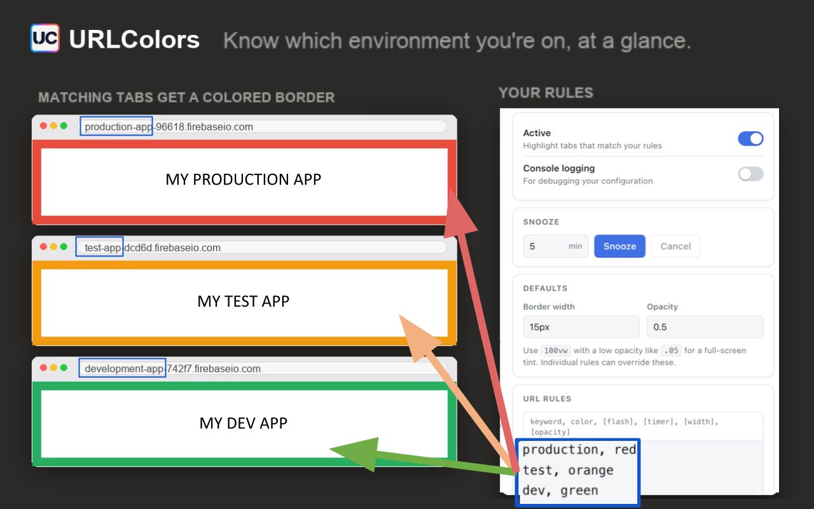
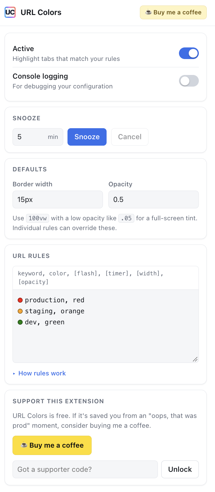

Trusted by 9,000+ users since 2017
Never mistake production for staging again.
Your environments look identical. URLColors puts a border around any tab whose URL matches your rules, in whatever colors you pick — so you know where you are before you click anything.
Free and open source · No account · No tracking or analytics · Your rules and browsing data never leave your device

Works in your browser
Pick yours.
The app looks the same. That's the problem.
Dev, staging and production render pixel for pixel identically. The only thing telling them apart is a string in the address bar you stopped reading months ago — right up until you run the migration against the wrong database.
Impossible to miss
A colored border frames the whole page. It's in your peripheral vision the entire time you work, not tucked away in a toolbar.
Takes a minute to set up
One line per environment: a piece of the URL and a color. Wildcards cover every branch deploy and preview URL at once.
Stays out of the way
Borders sit over the page without shifting layout or intercepting clicks. Snooze it when you need a clean screenshot.
How it works
Three steps, once.
Install the extension
Add it from the Chrome Web Store or Firefox Add-ons, or build it for Safari — then pin it to your toolbar.
Write your rules
Open the popup and add one line per environment — a keyword to match, and the color you want.
Stop guessing
Every matching tab gets its border immediately, and updates the moment you change a rule.
Rules are one line each
A keyword to match anywhere in the URL, a color, and any options you want. Anything CSS understands works as a color.
- keyword — matched anywhere in the tab's URL
-
color —
red,#ff8800, any CSS color - flash — blink the border, with an interval in seconds
- width, opacity — override the defaults per rule
- * — wildcard, for preview and branch deploys
production.myapp.com, red
staging.myapp.com, orange, flash, 2
localhost:3000, green
*.preview.myapp.com, purple
admin.myapp.com, crimson, null, null, 100vw, .05
The last line tints the entire page instead of drawing a border — use
100vw with a low opacity. null skips an option you don't
want to set.
Everything in one popup
Set defaults once, then override them per rule. Snooze every border for a few minutes when you're sharing your screen, and turn it all off without uninstalling.
- Snooze — hide every border for a set number of minutes
- Defaults — border width and opacity for every rule
- Console logging — see exactly why a rule did or didn't match

Questions
The things people ask before installing.
Does URLColors send my browsing data anywhere?
No. There is no server, no analytics and no network requests of any kind — the code makes none. Your rules are stored locally in your own browser using its extension storage, and the extension reads the current tab's URL only to compare it against them. The source is public if you'd like to check.
Why does it ask for access to websites?
To draw the border, the extension has to add elements to the page you're looking at, which requires permission to run on that site. It only ever reads the URL to test it against your rules.
Does it work with localhost and custom ports?
Yes. A keyword like localhost:3000 matches anywhere in the URL, so ports
and paths work the same as domains.
Can I match preview and branch deploy URLs?
Use a wildcard: *.preview.myapp.com covers every generated subdomain, so
you don't have to add a rule per branch.
Can I hide the borders temporarily?
Yes — Snooze hides every border for a set number of minutes, which is what you want before a demo or a screenshot. There's also an Active toggle to switch the extension off entirely without uninstalling it.
Will the border interfere with the page?
No. The border is drawn over the page rather than inside the layout, so nothing shifts, and it doesn't capture clicks — you can interact with whatever is underneath it.
Is it really free?
Yes, and there's no paid tier — every feature is available to everyone. If it's saved you from an expensive mistake you're welcome to buy me a coffee, and supporters get a cosmetic thank-you in the popup, but nothing that changes what the extension does.
Know your environment.
Set it up once and stop worrying about which tab is which.
Add to Chrome — it's free